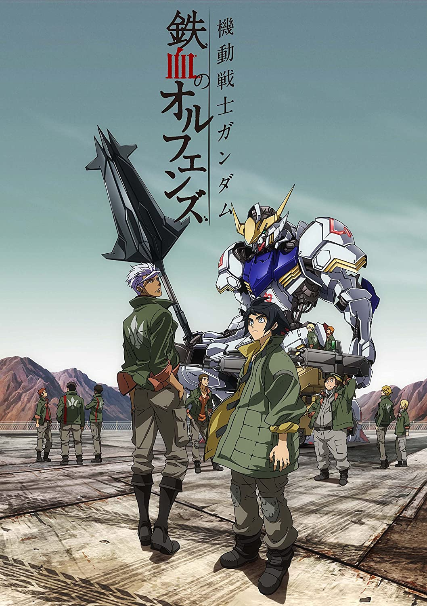

Mobie Suit Gundam: Iron-blooded Orphans
Over three hundred years have passed since the Calamity War, the great conflict between Earth and its outer space colonies. Now Earth is ruled over by four economic blocs, and the military organization Gjallarhorn is responsible for keeping the peace. Mars, on the other hand, depends heavily on Earth's economy. Horrified by the appalling living conditions that Mars' inhabitants have to bear, Kudelia Aina Bernstein, a young aristocrat from the Chryse Autonomous Region, gets involved in the Red Planet's independence movement. She hires the services of a local company, Chryse Guard Security (CGS), to escort her on the journey to Earth to negotiate economic conditions with the earthly bloc that controls the region. The Third Army Division—consisting of Mikazuki Augus, Orga Itsuka, and many other child soldiers—are chosen to protect her. When Gjallarhorn attacks the CGS facilities to assassinate the young revolutionary threatening their interests, Orga and his comrades must not let the attackers accomplish their goal—in fact, Gjallarhorn's actions might turn out to be the unintentional catalyst that leads the children to be the forgers of their own destiny.
Kimi no na wa
Mitsuha Miyamizu, a high school girl, yearns to live the life of a boy in the bustling city of Tokyo—a dream that stands in stark contrast to her present life in the countryside. Meanwhile in the city, Taki Tachibana lives a busy life as a high school student while juggling his part-time job and hopes for a future in architecture. One day, Mitsuha awakens in a room that is not her own and suddenly finds herself living the dream life in Tokyo—but in Taki's body! Elsewhere, Taki finds himself living Mitsuha's life in the humble countryside. In pursuit of an answer to this strange phenomenon, they begin to search for one another. Kimi no Na wa. revolves around Mitsuha and Taki's actions, which begin to have a dramatic impact on each other's lives, weaving them into a fabric held together by fate and circumstance.